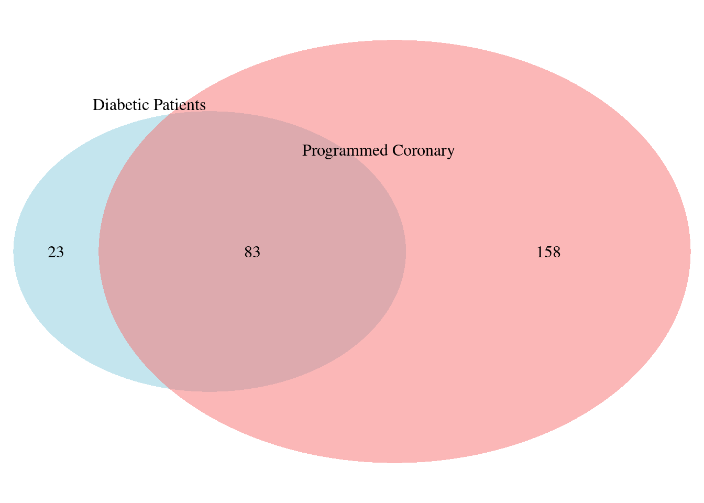

Data Interpretation
The number of injuries in the different blood vessels of the patients is important since both this and the injured vessels determine the complexity of the surgery and therefore the choice of procedure.
Extracorporeal circulation refers to the circulation of blood outside of the body through a machine that temporarily assumes an organ’s functions (eg. heart and lungs). The following bar graph shows the immediate complications on patients who underwent open heart surgery and extracorporeal circulation compared to those who did not have extracorporeal circulation.
Hyperlactatemia is the elevated quantity of lactate in blood. While a normal blood lactate level is between 0-2mmol/L, a patient with hyperlactatemia has a level above 3-5mmol/L. When this alteration arises in the operating room or very early in the ICU (early-onset hyperlactatemia), it is strongly associated with adverse outcomes and complications, while late-onset (6-12h in the ICU) is a benign alteration that spontaneously resolves itself within 24 hours. Between the 53 early-onset hyperlactic patients in surgery, 28 of them had complications.
Many researches have shown that LVEF values have relation with Post-Op surgery complications (hence, the need to study it in our project). Between the 11 patients in surgery with severe LVEF values, 7 of them had complications.
The differences in complications between patients who had angioplasty and open heart surgery in this dataset are shown in the next bar graph.
Procedures in male patients with morbid obesity
We found that many patients who had undergone an angioplasty, had had another one performed on them. The cause for this phenomenon may be that the arteries are blocked or obstructed again (it could be the same or other arteries) which is not a rare risk of a first angioplasty.
 # Complications in open heart surgery patients who entered for Programmed Coronary ***